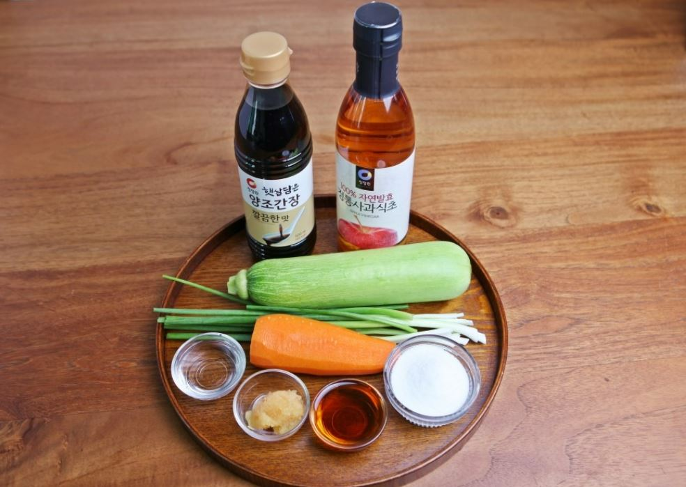

박막례 할머니표 간장비빔국수 황금레시피 대공개
조리 20분 | 초급 | 조회수 43429
100만 구독자를 보유한 인기 유튜버 박막례 할머니, 다들 한 번쯤 들어보셨을 텐데요! 박막례 할머니는 일상 콘텐츠 뿐만 아니라 다양한 콘텐츠를 다루는 만능 유튜버입니다. 그 중에서도 할머니표 레시피 콘텐츠도 정말 인기가 많은데요. 오늘은 구독자분들이 극찬한 박막례 할머니의 간장비빔국수 황금레시피를 준비했습니다! 청정원 양조간장 깔끔한 맛으로 짭짤한 맛과 청정원 정통사과식초를 첨가해 새콤하고 담백한 쫄깃쫄깃 간장비빔국수, 여러분의 입맛을 사로잡을 레시피를 지금 바로 공개할게요~
박막례 할머니표 간장비빔국수 황금레시피 대공개♥ 재료
[재료]
소면 2인분, 애호박 1/4개, 당근 1/3개, 쪽파 5~6대
[양념]
청정원 양조간장 깔끔한맛 3큰술, 설탕 3큰술, 청정원 정통사과식초 1큰술,
참기름 2큰술, 깨소금, 다진마늘 1큰술, 통깨 1큰술
박막례 할머니표 간장비빔국수 황금레시피 대공개♥ 레시피

1. 애호박, 당근, 쪽파는 3~4센티로 채를 썰어 준비한다.

2. 간장, 설탕, 참기름, 다진마늘, 식초, 통깨 등을 미리 섞어 양념장을 만든다.

3. 끓는물에 소면을 넣어 끓어 오르면 찬물을 부어 주며 쫄깃하게 삶는다.

4. 면이 다 삶아지기 30초전 썰어둔 채소를 넣어 같이 삶아주고 찬물에 면을 살살 헹궈 채반에 받쳐 물기를 빼서 준비한다.


5. 삶아진 국수에 양념 만들어 둔 것을 부어 비벼준다.
고소, 달달, 짭짤, 새콤함을 모두 느낄 수 있는 박막례 할머니표 간장비빔국수가 완성되었어요~! 일반 간장비빔국수와는 달리 국수 위에 올라가는 고명을 기름에 볶지 않고 소면과 함께 삶아내기 때문에 만들기가 훨씬 간편해요. 또한 새콤한 식초가 살짝 들어가 여름에 시원하게 먹기 좋답니다. 여기서 꿀팁을 하나 알려드리자면 기호에 따라 청양고추, 볶음김치 등 평소 좋아하는 재료를 함께 넣어 먹으면 더욱 맛있게 즐길 수 있다는 사실! 그럼 한 번 먹기 시작하면 젓가락질을 멈출 수 없는 박막례 할머니표 간장비빔국수로 든든하게 한 그릇, 어떠세요?
박막례 할머니표 간장비빔국수 황금레시피 대공개
1. 애호박, 당근, 쪽파는 3~4센티로 채를 썰어 준비한다.
2. 간장, 설탕, 참기름, 다진마늘, 식초, 통깨 등을 미리 섞어 양념장을 만든다.
3. 끓는물에 소면을 넣어 끓어 오르면 찬물을 부어 주며 쫄깃하게 삶는다.
4. 면이 다 삶아지기 30초전 썰어둔 채소를 넣어 같이 삶아주고 찬물에 면을 살살 헹궈 채반에 받쳐 물기를 빼서 준비한다.
5. 삶아진 국수에 양념 만들어 둔 것을 부어 비벼준다.